Talks / Teaching / Mentoring
A practice connecting cinema, representation, documentary language, authorship and access through talks, teaching and mentoring.
Selected partners, schools and platforms
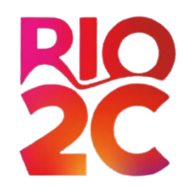
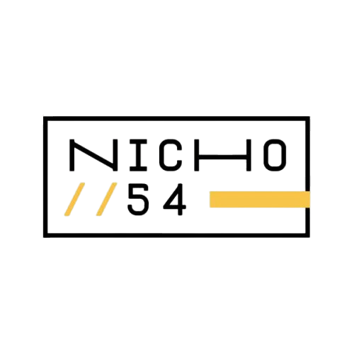

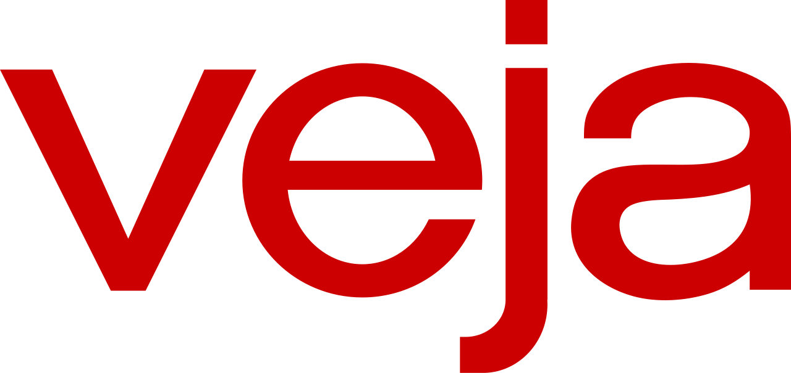
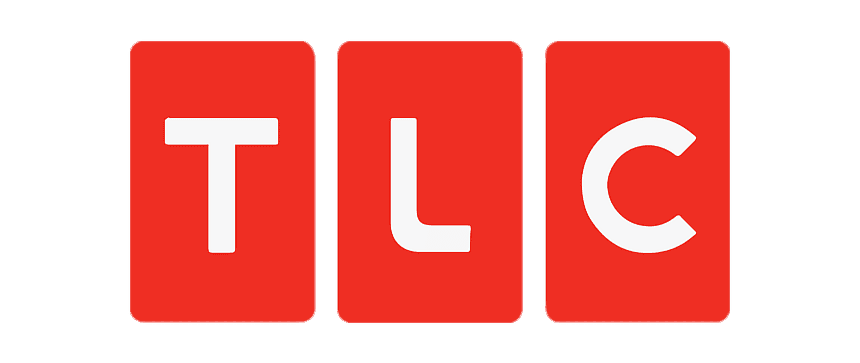
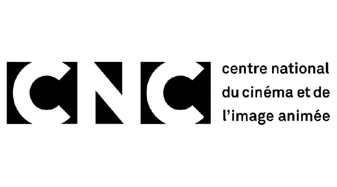
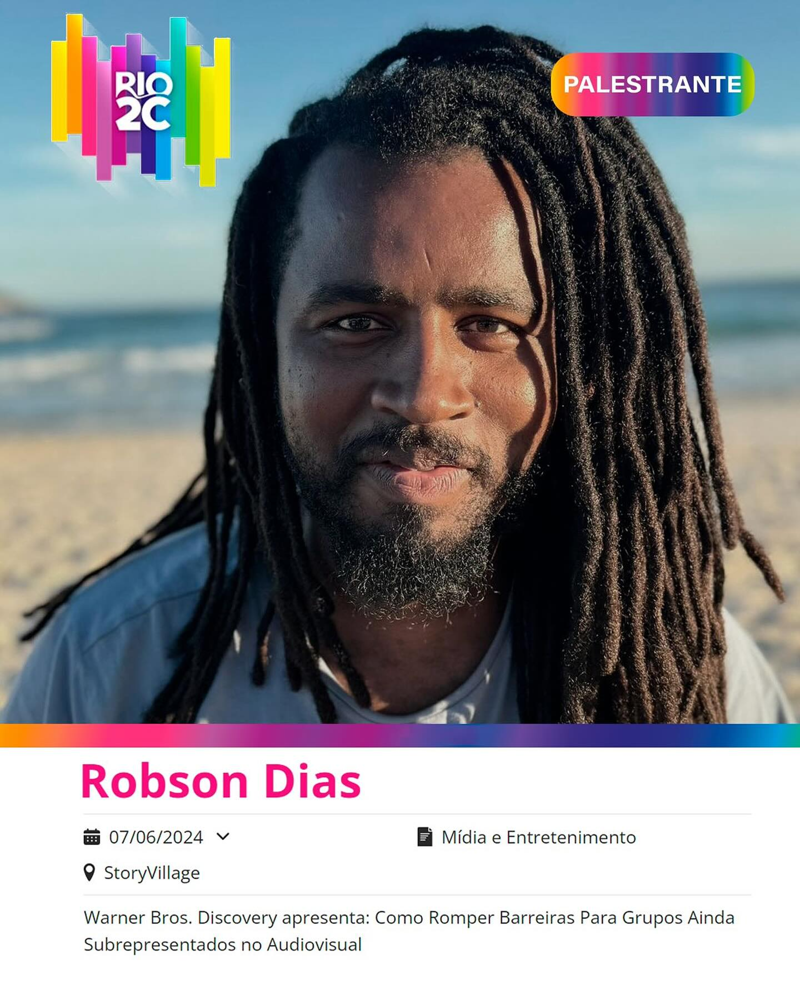
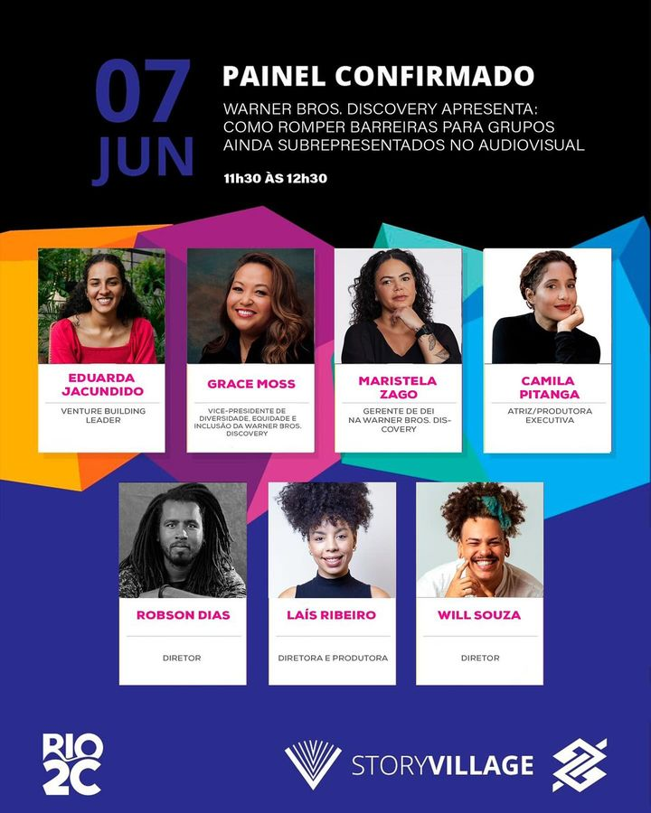
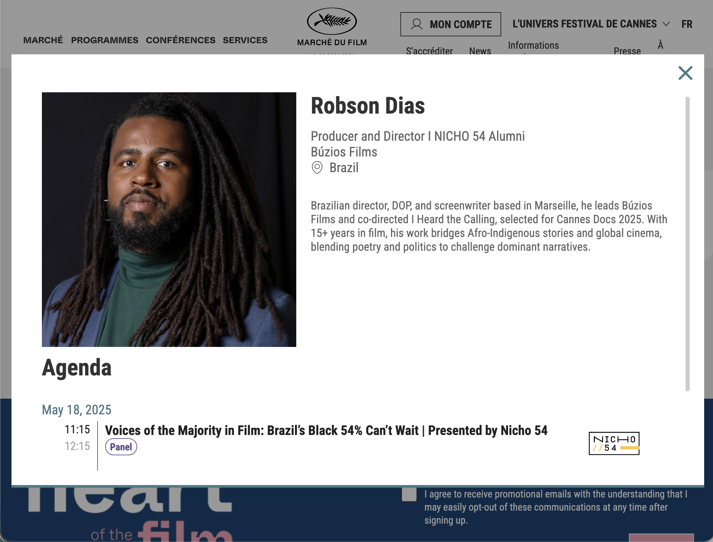
Overview
Robson Dias works not only as a director, editor and cinematographer, but also as a speaker, teacher and mentor. His interventions are grounded in practice: festival circulation, international co-production, documentary form, political cinema, decolonial perspectives and Afro-Indigenous representation.
His approach combines professional experience with critical reflection, creating spaces where artistic language, industry realities and structural questions can be addressed together.
Speaking
Robson has appeared as a speaker at Cannes Docs 2025 — Marché du Film, in the panel “Voices of the Majority in Film,” focused on Afro-descendant representation, financing and distribution in Brazil. He has also taken part in Rio2C, one of Latin America’s major events for audiovisual, music and innovation.
Teaching & workshops
In Marseille, he has taught camera practice at École Kourtrajmé and led camera workshops at Civic-fab. He has also worked as an editing instructor with collectif LFKs, contributing to self-directed and alternative learning contexts.
These workshops are designed for emerging filmmakers, artists and participants seeking practical tools as well as a broader understanding of how images produce meaning, power and visibility.
Available for
- Festival talks and public conversations
- Panels on documentary, representation and decolonial cinema
- Camera and editing workshops
- Mentoring for emerging filmmakers and labs
- Guest lectures in schools, universities and cultural institutions
- Conversations on Afro-Indigenous narratives, authorship and image politics
Selected highlights
- Cannes Docs 2025 — Marché du Film, speaker in “Voices of the Majority in Film”
- Rio2C — speaker in the audiovisual and creativity market context
- École Kourtrajmé, Marseille — camera instructor
- Civic-fab, Marseille — camera workshops
- collectif LFKs, Marseille — editing workshops